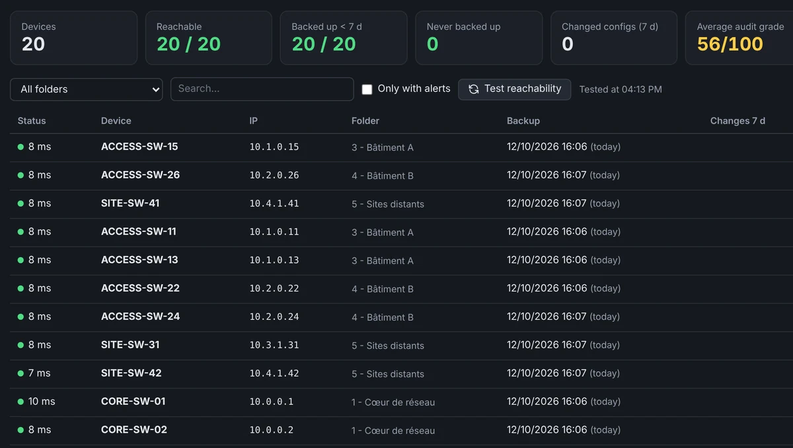
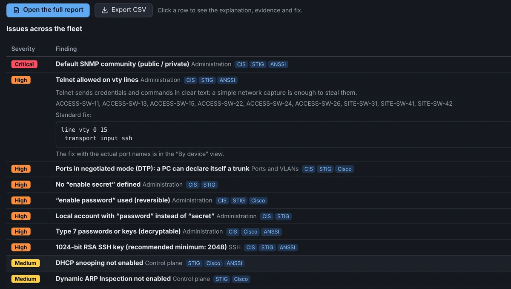
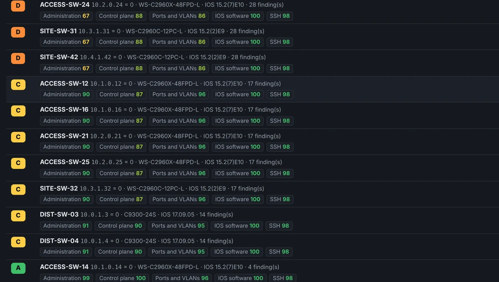

Run 200 Cisco switches like they were one.
Vty brings your SSH sessions, config backups, security audits and bulk commands into one app. No more twenty PuTTY windows and copy-pasting from one switch to the next.
.exe installer for Windows 10 and 11. Also as an MSI or a portable version.

Two terminals side by side. Your fleet in folders on the left, up to four sessions on screen, colored Cisco output. The red frame marks a critical device.
- 82audit checks (CIS, STIG, ANSSI)
- 6backups in parallel
- 4terminals on screen
- 25devices in the free version
New in 1.9
Six additions that change your day.
The latest releases add what was missing to go from a cable plugged in to a fleet that is organised, backed up and audited.
Generate your SSH keys inside Vty
Ed25519, RSA 3072 or 4096, with or without a passphrase. Kept in “My keys”, with the Windows permissions OpenSSH expects set for you.
Network discovery Pro
Ping and ports 22 / 23 / 80 / 443 on a range or a CIDR, then the devices found join your sessions in one click.
TCP port scan Pro
Ready-made or custom port lists, filters and CSV export. Only for networks you are allowed to test.
Help on every screen
The “? Help” button (or F1) explains what the screen is for, how to use it, what Vty sends to the device and what to watch for.
Open from GNS3
ssh:// and telnet:// links (PuTTY syntax understood) open Vty. A Telnet console opened over SSH by mistake is offered in Telnet.
Configurations in one place Pro
Current configuration, history, comparison and search in one place. Two histories can be merged without losing anything.
Day to day
Sound like your week?
Vty was written by a network engineer, for the moments when the console gets in the way instead of helping.
What changed on the second-floor switch since last week?
Vty backs up the configs of your whole fleet in one click, six devices at a time. A new version is only kept when the config has changed, and the diff shows you the lines added or removed.
ProBackups and diff
VLAN 30 needs to be on forty switches by tonight.
Check the tabs, type the command once: it goes to all of them. For everyday changes (IP phone + PC port, VLAN on a trunk, err-disabled port), macros check the fields and show a preview before sending.
ProMulti-exec and macros
The auditor is coming on Thursday.
82 checks based on CIS, DISA STIG and ANSSI. Every switch gets a grade from A to E, every finding comes with a fix ready to paste, and you walk away with an HTML report. Your IOS version is also checked against known Cisco vulnerabilities.
ProSecurity audit
I typed reload in the wrong tab.
Vty catches dangerous commands before they're sent, even abbreviated (rel, wr er, sw tr al vl). For the worst ones, you have to type CONFIRM. Critical devices are shown in red.
FreeSafeguards
Demo
See it all in two minutes.
SSH sessions, split screen, macros, backups, bulk commands, audit and safeguards, filmed on a fictional fleet of 20 switches.
In pictures
Your whole fleet, right in front of you.
Screenshots of the real app on a sample fleet. Names and addresses are fictional.






Features
Everything you do on your switches, in one window.
One command, every switch
Multi-exec: type once, Vty sends it to every checked tab.
Configs always backed up
Six devices in parallel, a version kept only when the config changes, line-by-line diff.
An audit ready for the auditor
82 checks, A to E grade, fix ready to paste and HTML report.
Known flaws in your IOS version
Checked against Cisco PSIRT advisories, with the first fixed release.
A “show” across the whole fleet
Read-only commands on hundreds of switches, live filter, CSV export.
Macros without typos
IP phone + PC port, VLAN on a trunk, err-disabled port: fields checked, preview before sending.
Drag and drop an IOS image
SFTP / SCP, with the MD5 verified by the switch after the upload.
Fleet health at a glance
Reachability, stale backups, audit grades and alerts on a single screen.
Discover what is plugged in
Ping and usual ports on a range or a CIDR, then add the devices found to your sessions.
Scan TCP ports
Ready-made or custom lists, filters, CSV export, on networks you are allowed to test.
Generate your SSH keys
Ed25519 or RSA, with or without a passphrase, kept in “My keys” with the Windows permissions OpenSSH expects.
Help on every screen
“? Help” button or F1: what the screen is for, the steps, what Vty sends, what to watch for.
Security
Your data stays on your computer.
Vty runs entirely on your PC. No account, no cloud, no telemetry. It only goes online for two things: checking for new versions (can be turned off) and, with a VTY- Pro key, checking the license with Polar about once a day.
- Passwords are saved only if you allow it, in an encrypted vault; passphrases are never saved.
- Config backups encrypted on your computer (AES-256, key protected by Windows), with an optional master password and automatic lock.
- Secrets hidden in session logs, copies and exports: SNMP communities, passwords, keys.
- Activity log: multi-exec, macros, bulk commands, confirmed dangerous commands, with who, what and when.
- Only reachable from your own computer (127.0.0.1), never from the network.
- SSH fingerprint checked: the connection is blocked if the switch's key changes.
- Old SHA-1 and CBC algorithms only used as a last resort, and flagged.
- License check: only the key, Polar's public organization ID and the PC name are sent. Your sessions, configurations and passwords never leave the computer.
- CSV exports protected against Excel formula injection.
Sample audit · ACCESS-SW-12 · grade B
Sample data. Each finding gives the explanation, the evidence (secrets masked) and the fix with the real port names.
Pricing
Free to start. Pro when your fleet grows.
One install: the free version becomes Pro as soon as you paste your license key.
Free
No time limit, no sign-up
- SSH (password, key, Pageant), Telnet and serial console
- Tabs, instant search and session logs
- Import of MobaXterm and PuTTY sessions
- Safeguards against dangerous commands
- Up to 25 saved devices
Pro Personal
Personal or school use, outside any professional activity · lifetime license · 12 months of updates · 1 device
- Everything in Free, unlimited devices
- Split screen up to 4 terminals and multi-exec
- Config backups and diff
- A to E security audit, HTML report and Cisco PSIRT flaws
- Bulk commands, macros, SFTP / SCP files
- Fleet dashboard
Secure payment by Polar. Your license key arrives by email right after.
Send an email with the subject “Vty Pro” to:
contact@getvty.comOr open my mail app. You'll hear from us the day sales open.
Pro Business Recommended
Professional use (company, freelancer, public body) · invoice in your name · lifetime license · 12 months of updates · 1 device
- Same features as Pro Personal
- One license per user; several PCs: one license per PC
- Invoice with your VAT number (tick “business purchase” on the checkout page)
- Quote: contact@getvty.com
Secure payment by Polar. Your license key arrives by email right after.
Get notified when sales openBoth licenses have the same features: only the use differs. After the 12 months, your version stays Pro for life. Renewing only gets you the new releases. Payment is handled by Polar, the official seller, which calculates taxes for your country.
FAQ
Frequently asked questions
Who makes Vty?
A network, systems and cybersecurity engineer in France who manages Cisco switches every day. I built Vty because I wanted a tool that stops me from running reload on the wrong device. Vty is a personal project, developed independently of my employer and published by my sole-proprietor business (see the legal notice). Questions, bugs, criticism: contact@getvty.com, I answer myself.
Which devices does Vty work with?
The terminal works with any device reachable over SSH, Telnet or a serial console. Backups, the audit, macros and the vulnerability check are built for Cisco IOS and IOS-XE.
Where are my passwords stored?
By default, nowhere: Vty asks for them when you connect and keeps them in memory only as long as needed. You can allow it to save them, and they then go into an encrypted vault on your computer (turning this option off deletes the ones already saved). For an SSH key, only its location is saved; the passphrase is asked again. Saved configurations, which contain your devices' secrets, are encrypted on your computer, and you can add a master password.
Is the free version really free?
Yes, with no time limit and no sign-up. It's limited to 25 saved devices; the fleet management features (backups, audit, multi-exec…) need a Pro license.
Windows says “Windows protected your PC”. Is that normal?
Yes: the installer isn't signed yet. Click “More info”, then “Run anyway”. You can check the file with its SHA-256 fingerprint and the VirusTotal scan in the Download section.
.exe, MSI or portable: which one?
The .exe installer suits most computers: it installs Vty with its icon and a shortcut. The MSI is for deploying Vty with GPO, SCCM or Intune. The portable version (zip) runs from any folder or USB stick, with no installation. All three contain the same application.
Do I need an Internet connection?
Not for the free version: it works on an isolated network. A Pro key sold online (VTY-) is activated once over the Internet, then rechecked about once a day; offline, Pro stays active for 30 days. Vty also checks for a new version at startup (you can turn that off), and the Cisco vulnerability check only contacts Cisco when you run it.
How does the Pro license work?
Pro Personal: €45 incl. VAT (personal or school use). Pro Business: €65 incl. VAT (professional use). Per user, paid once. Your version stays Pro for life, with 12 months of new releases included. A key can be activated on 1 device, and you can deactivate it (License → Remove) to activate it on another PC. Payment goes through Polar; the key arrives by email.
How do I get several licenses?
One key per purchase and per user: for 3 licenses, buy 3 times and you get 3 keys. For 5 licenses or more, write to contact@getvty.com for a group price, a quote or a purchase order.
Versions
Release history
Cisco Business (Catalyst 1300, CBS, SG): the audit skips IOS rules that do not apply to these switches, recognises their equivalents (RADIUS, SNTP, encrypted accounts, SSH) and adds 2 dedicated rules (Telnet server, management access list). Cisco Business: backups now read the version, model and port status correctly; the “More:” pager is recognised (no more Locate hangs on these switches). Locate: if a switch refuses a command, Vty falls back to another one (show arp, MAC table) instead of stopping; it follows the neighbour switch (CDP / LLDP) even behind an access port, down to the right port. Locate: full-width result banner (address, switch, port, VLAN, description, path from the core), “Possible port” when several ports are candidates. Darker theme: darker interface and terminals, a clearer red for critical devices' terminals, softer blue. Redesigned checkboxes: in folder lists the whole row is ticked (highlighted row and check mark); options and choices use plain boxes and circles. Full-width tool screens (Locate, Backup, Commands, Audit, Discovery, Scan) and a reorganised Network map; less prominent “Cancel” button.
Export sessions to CSV: “Import/Export” menu then “Export my sessions (CSV)…”, or right-click a folder then “Export this folder (CSV)…”. Columns name, IP, folder, port and type, with no password at all; the file can be imported back into Vty as is. “Import/Export” button in the sessions bar (it replaces the ⇅ button), and “Collapse all / Expand all” in the right-click menu of the session list. Cleaner, easier-to-read dashboard: coloured numbers instead of icons, clear legend, tinted rows for devices with a problem, text “SSH” and “History” buttons, more spacious columns. “To do” list: one big coloured number per item, and the whole row is clickable. Audit: the grade is shown as a big coloured letter, with the score out of 100 and the date right below.
“? Help” button on every screen (sessions, files, macros, dashboard, backups, configurations, commands, audit, map, locate, port scan, discovery, SSH keys, security, licence, action log): what it is for, how to use it, what Vty does on the device, points to watch. F1 opens and closes it. Welcome screen: the sentence about saved passwords is corrected (saved only if you allow it, in the encrypted vault). .exe installer with the Vty icon, in addition to the MSI. Saved credentials: the Username column is masked (dots), and so is the Cisco API Client ID in the audit screen. Pro license: keys sold on getvty.com (VTY-…) activate online, on 1 device at a time (“Remove” in the License screen frees the slot), and are rechecked about once a day; offline, Pro stays active for 30 days. The 12 months of updates count from the purchase date. Merging two configuration histories: in “Attach”, a session that already has a history can be chosen; the versions are added to it, sorted by date, nothing is deleted.
SSH keys: Vty generates your keys (Ed25519, RSA 3072 or 4096) with or without a passphrase, keeps them in the “My keys” tab and sets the right Windows permissions for OpenSSH. TCP port scan (Pro): ready-made or custom port lists, filters, CSV export. Only for networks you are allowed to test. Network discovery (Pro): ping and ports 22 / 23 / 80 / 443 on a range or a CIDR, then add the devices found to your sessions in one click. Open from GNS3 and ssh:// / telnet:// links (PuTTY syntax understood). If a Telnet console is opened over SSH by mistake, Vty offers to reopen it in Telnet. Telnet: “reload” and “write erase” now work on GNS3 consoles (the Enter key was cancelling the confirmation). A single “Configurations” screen: current configuration, history, comparison and search. Secrets hidden by default, revealable for 60 seconds. Identical “Connection” block on the Backup, Commands, Locate and Map screens. Map settings in 3 steps, with help on the key notions. More accurate dashboard: date of the last successful backup, unreachable device told apart from a never-tested one, Telnet excluded from the counters, clickable filters. Renaming a session or changing its IP address keeps its configuration history; an orphan history can be attached to a session (list with search). Audit: no grade until a configuration has been analysed. Bulk commands: an empty reply is no longer confused with no reply, and “| redirect” / “| tee” are refused. Session form checked before saving, more reliable Locate, extended masking (HSRP, addresses with credentials).
Master password more resistant to guessing (scrypt, 128 MB per attempt); existing vaults are upgraded automatically at the next unlock. Safer encryption of old backups: a crash, a full disk or an unreadable file can no longer damage a backup, and the migration resumes at the next startup. Wider secret masking: NX-OS, HSRP / VRRP / NHRP, IKEv2 (local and remote keys), "key config-key" master key, NX-OS SNMPv3. Fewer false positives (descriptions, banners, key numbers). New SECURITE.md document: how Vty protects your data, and its limits.
Configuration backups encrypted on your computer (AES-256), with a key protected by your Windows account: another Windows account or a stolen disk can no longer read them. Existing backups are encrypted automatically at first startup. Optional master password (language menu at the bottom left, then Security): Vty asks for it at startup, and even an administrator of the PC can no longer read the backups without it. Automatic lock after 5 to 60 minutes of inactivity. Secrets hidden by default in session logs, configuration copies and bulk command exports (passwords, SNMP communities, RADIUS / TACACS / SNMPv3 keys…). Copying with secrets is still possible after confirmation. Activity log: multi-exec, macros, confirmed dangerous commands, bulk commands, backups, audits and files, with date, user and devices. CSV export. Adjustable backup retention: number of versions and duration per device.
New logo: the Vty icon is now the same everywhere (taskbar, title bar, Start menu, desktop and website), in amber like inside the app.
Device search is clearly visible: when a filter is active, the search box and the counter turn orange, and Esc clears it to show everything again. Vty icon fixed in the taskbar, Start menu and desktop after an update (unpin and pin Vty again once if the icon is still generic).
Redesigned interface: crisp icons instead of emojis, clearer menus, dialogs and tables, subtle scrollbars, light animations. Smoother terminals: GPU rendering (can be turned off in the language menu at the bottom left), even with large “show” outputs and 4 terminals on screen. Dashboard, audit and bulk commands update row by row: no more stutter while jobs run, and opened details stay open. Compact toolbar on narrow windows, tabs scroll with the mouse wheel, resizable sidebar (drag its edge). The release date is shown next to the version number in the update dialog; the Cisco advisory check only runs when its box is ticked.
Vty in English: the interface follows the Windows language (French or English), with a manual switch at the bottom left (FR / EN). Messages, audit reports, session logs and built-in macros translated; dates are shown as YYYY-MM-DD in English. English website: getvty.com/en.
SSH key login (OpenSSH, PEM, PKCS#8) or agent (Pageant, Windows OpenSSH agent): only the key location is saved, the passphrase is asked at each connection. Telnet for old devices, with a clearly visible “unencrypted” banner. Automatic session logs to text files (off by default, configurable per device). Import of MobaXterm and PuTTY sessions (folders kept, credentials never imported). Wrong password: Vty asks again instead of disconnecting.
Audit examples and texts made generic (SNMP monitoring, syslog collector / SOC), default macro VLANs: 20 and 30. Website: share preview and icon.
Vty tells you about new versions at startup, with what's new and a link to the website (can be turned off in the License window). Nothing is downloaded or installed automatically, and no data is sent.
Free version (SSH, serial console, safeguards, 25 devices) and Pro version (everything else, unlimited devices). Lifetime Pro license, checked on the computer without an Internet connection, with 1 year of updates.
First public release. Security audit with accepted risks and review date, HTML report, customizable security policy.
Download
Up and running in two minutes.
Install, import your PuTTY or MobaXterm sessions or a device CSV, and connect. All three files contain the same application, free or Pro depending on your key.
.exe installer Recommended
Installs Vty with its icon and a Start menu shortcut.
Vty-1.9.3-setup.exe · 17 MB
SHA-256 fingerprint
718271c4e14ed39525076b67d88795ebdf35e4c14cd1434439cbcc57cd7f468c
MSI package
To deploy Vty on several computers: GPO, SCCM or Intune.
Vty-1.9.3.msi · 16 MB
SHA-256 fingerprint
0acf00a95072753b7102a08b5dc07807cdfaf2f2aae21879890afd3b2b9a6d45
Portable version
A folder to unzip and run, no installation. Handy on a USB stick.
Vty-1.9.3-portable.zip · 18 MB
SHA-256 fingerprint
15a198979e313cd240ce45e7b679fe172c077bdb50033fab4643449b42824eb7
VirusTotal scan of the .exe installer
Windows shows “Windows protected your PC”? That is normal: the file isn't signed yet. Click “More info”, then “Run anyway”.